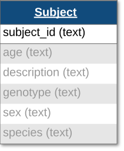
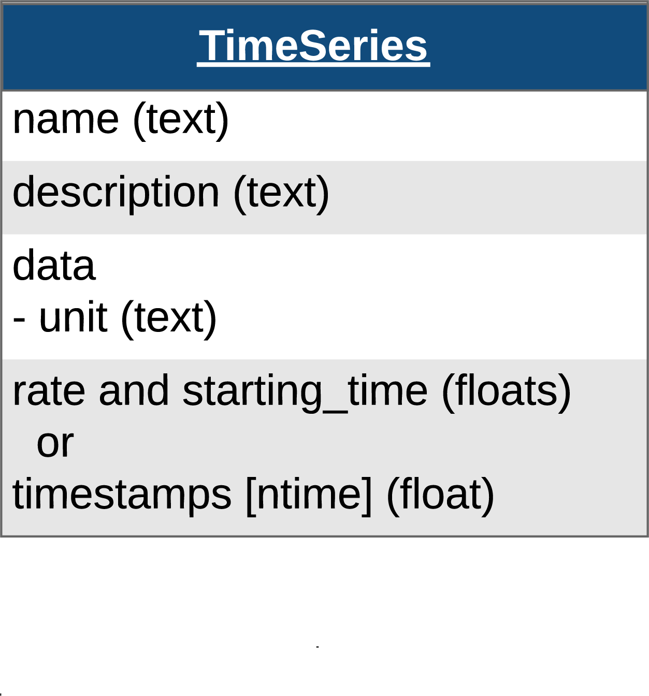
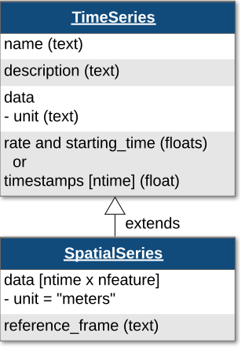
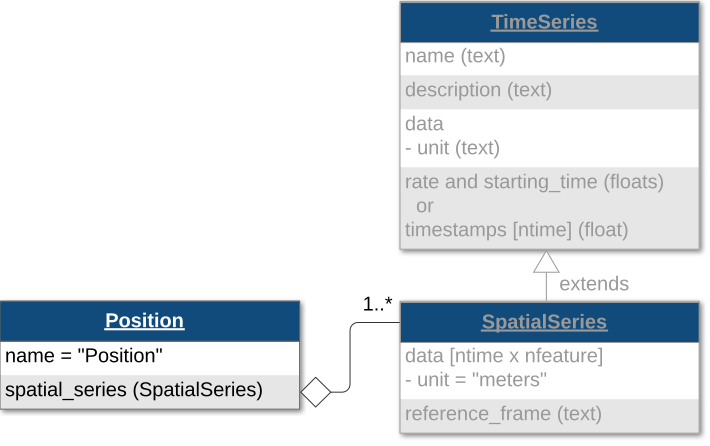
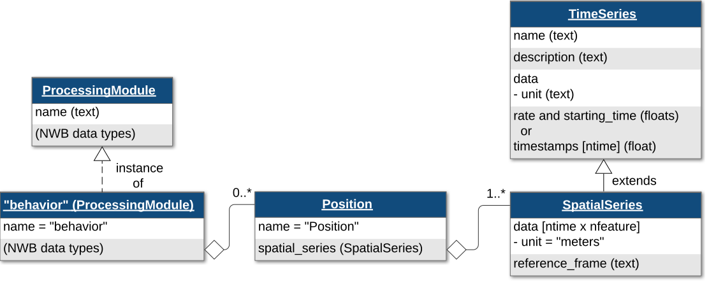
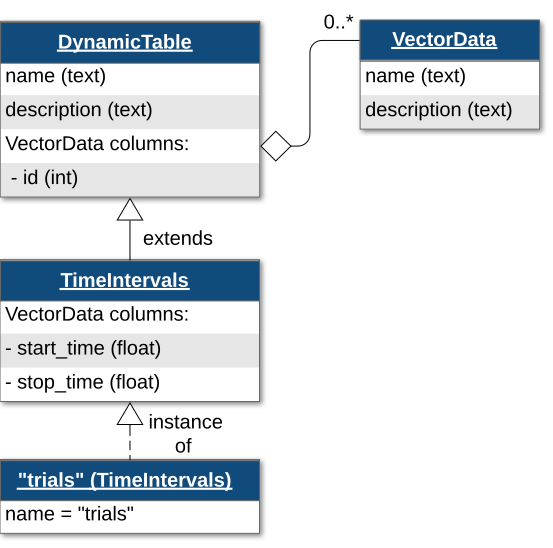
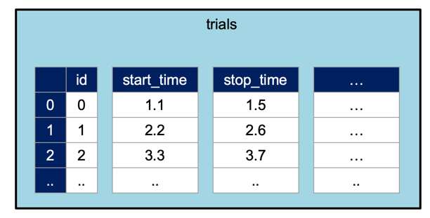

Note
Go to the end to download the full example code.
NWB File Basics
This example will focus on the basics of working with an NWBFile object,
including writing and reading of an NWB file, and giving you an introduction to the basic data types.
Before we dive into code showing how to use an NWBFile, we first provide
a brief overview of the basic concepts of NWB.
Background: Basic concepts
In the NWB Format, each experiment session is typically
represented by a separate NWB file. NWB files are represented in PyNWB by NWBFile
objects which provide functionality for creating and retrieving:
TimeSeries datasets – objects for storing time series data
Processing Modules – objects for storing and grouping analyses, and
experiment metadata and other metadata related to data provenance.
The following sections describe the TimeSeries and ProcessingModule
classes in further detail.
TimeSeries
TimeSeries objects store time series data and correspond to the TimeSeries specifications
provided by the NWB Format. Like the NWB specification, TimeSeries Python objects
follow an object-oriented inheritance pattern, i.e., the class TimeSeries
serves as the base class for all other TimeSeries types, such as,
ElectricalSeries, which itself may have further subtypes, e.g.,
SpikeEventSeries.
See also
For your reference, NWB defines the following main TimeSeries subtypes:
Extracellular electrophysiology:
ElectricalSeries,SpikeEventSeriesIntracellular electrophysiology:
PatchClampSeriesis the base type for all intracellular time series, which is further refined into subtypes depending on the type of recording:CurrentClampSeries,IZeroClampSeries,CurrentClampStimulusSeries,VoltageClampSeries,VoltageClampStimulusSeries.Optical physiology and imaging:
ImageSeriesis the base type for image recordings and is further refined by theOpticalSeries,OnePhotonSeries, andTwoPhotonSeriestypes. Other related time series types are:IndexSeries,RoiResponseSeries.Others:
OptogeneticSeries,SpatialSeries,DecompositionSeries,AbstractFeatureSeries,IntervalSeries.
Processing Modules
Processing modules are objects that group together common analyses done during processing of data. They often hold data of different processing/analysis data types.
See also
For your reference, NWB defines the following main processing/analysis data types:
Behavior:
BehavioralEpochs,BehavioralTimeSeries,CompassDirection,PupilTracking,Position,EyeTracking.Events:
EventsTable.Extracellular electrophysiology:
EventDetection,FeatureExtraction,FilteredEphys,LFP.Optical physiology:
DfOverF,Fluorescence,ImageSegmentation,MotionCorrection.Others:
Images.TimeSeries: Any
TimeSeriescan be used to store processing/analysis data.
NWB organizes data into different groups depending on the type of data. Groups can be thought of
as folders within the file. Here are some of the groups within an NWBFile and the types of
data they are intended to store:
acquisition: raw, acquired data that should never change
processing: processed data, typically the results of preprocessing algorithms and could change
analysis: results of data analysis
stimuli: stimuli used in the experiment (e.g., images, videos, light pulses)
The following examples will reference variables that may not be defined within the block they are used in. For clarity, we define them here:
from datetime import datetime
from uuid import uuid4
import numpy as np
from dateutil import tz
from hdmf.common import MeaningsTable
from pynwb import NWBHDF5IO, NWBFile, TimeSeries
from pynwb.behavior import Position, SpatialSeries
from pynwb.event import EventsTable
from pynwb.file import Subject
The NWB file
An NWBFile represents a single session of an experiment.
Each NWBFile must have a session description, identifier, and session start time.
Importantly, the session start time is the reference time for all timestamps in the file.
For instance, an event with a timestamp of 0 in the file means the event
occurred exactly at the session start time.
Create an NWBFile object with the required fields
(session_description, identifier,
session_start_time) and additional metadata.
Note
Use keyword arguments when constructing NWBFile objects.
session_start_time = datetime(2018, 4, 25, 2, 30, 3, tzinfo=tz.gettz("US/Pacific"))
nwbfile = NWBFile(
session_description="Mouse exploring an open field", # required
identifier=str(uuid4()), # required
session_start_time=session_start_time, # required
session_id="session_1234", # optional
experimenter=[
"Baggins, Bilbo",
], # optional
lab="Bag End Laboratory", # optional
institution="University of Middle Earth at the Shire", # optional
experiment_description="I went on an adventure to reclaim vast treasures.", # optional
keywords=["behavior", "exploration", "wanderlust"], # optional
related_publications="doi:10.1016/j.neuron.2016.12.011", # optional
)
nwbfile
Note
See the NWBFile Best Practices
for detailed information about the arguments to
NWBFile
Subject Information
In the Subject object we can store information about the experiment subject,
such as age, species, genotype, sex, and a description.
{kind=link}

The fields in the Subject object are all free-form text (any format will be valid),
however it is recommended to follow particular conventions to help software tools interpret the data:
age: ISO 8601 Duration format, e.g.,
"P90D"for 90 days oldspecies: The formal Latin binomial nomenclature, e.g.,
"Mus musculus","Homo sapiens"sex: Single letter abbreviation, e.g.,
"F"(female),"M"(male),"U"(unknown), and"O"(other)
Add the subject information to the NWBFile
by setting the subject field to a new Subject object.
subject = Subject(
subject_id="001",
age="P90D",
description="mouse 5",
species="Mus musculus",
sex="M",
)
nwbfile.subject = subject
subject
Time Series Data
TimeSeries is a common base class for measurements sampled over time,
and provides fields for data and timestamps (regularly or irregularly sampled).
You will also need to supply the name and unit of measurement
(SI unit).
{kind=link}

For instance, we can store a TimeSeries data where recording started
0.0 seconds after start_time and sampled every second (1 Hz):
data = np.arange(100, 200, 10)
time_series_with_rate = TimeSeries(
name="test_timeseries",
description="an example time series",
data=data,
unit="m",
starting_time=0.0,
rate=1.0,
)
time_series_with_rate
For irregularly sampled recordings, we need to provide the timestamps for the data:
timestamps = np.arange(10.)
time_series_with_timestamps = TimeSeries(
name="test_timeseries",
description="an example time series",
data=data,
unit="m",
timestamps=timestamps,
)
time_series_with_timestamps
TimeSeries objects can be added directly to NWBFile using:
NWBFile.add_acquisitionto add acquisition data (raw, acquired data that should never change),NWBFile.add_stimulusto add stimulus data, orNWBFile.add_stimulus_templateto store stimulus templates.
nwbfile.add_acquisition(time_series_with_timestamps)
We can access the TimeSeries object 'test_timeseries'
in NWBFile from acquisition:
nwbfile.acquisition["test_timeseries"]
or using the method NWBFile.get_acquisition:
nwbfile.get_acquisition("test_timeseries")
Other Types of Time Series
As mentioned previously, there are many subtypes of TimeSeries that are used to store
different kinds of data. The approach of creating a TimeSeries object and adding it
to the appropriate NWBFile group can be used for all subtypes of
TimeSeries data.
For storing events with annotations (e.g., behaviors scored from video), use
EventsTable in NWBFile.events. The required timestamp
column stores the time of each event in seconds from the session start time. The
optional built-in duration column stores the length of each event in seconds, and
the optional built-in annotation column can be used to store a text label for each
event.
behavior_events = EventsTable(
name="scored_behaviors",
description="Behaviors of the animal scored from video recordings.",
)
behavior_events.add_event(timestamp=10.2, duration=1.4, annotation="grooming")
behavior_events.add_event(timestamp=18.7, duration=0.6, annotation="rearing")
behavior_events.add_event(timestamp=25.0, duration=2.1, annotation="grooming")
To define what each value in the annotation column means, attach an optional
MeaningsTable to the EventsTable.
The MeaningsTable is named {column_name}_meanings automatically and should
include one row per possible value of the target column, even if the value does not
appear in the data.
annotation_meanings = MeaningsTable(
target=behavior_events["annotation"],
description="Meanings of the values in the 'annotation' column.",
)
annotation_meanings.add_row(value="grooming", meaning="Self-grooming with the forepaws.")
annotation_meanings.add_row(value="rearing", meaning="Rearing up on the hind legs.")
behavior_events.add_meanings_table(annotation_meanings)
nwbfile.add_events_table(behavior_events)
Spatial Series and Position
SpatialSeries is a subclass of TimeSeries
that represents the spatial position of an animal over time.
{kind=link}

Create a SpatialSeries object named "SpatialSeries" with some fake data.
# create fake data with shape (50, 2)
# the first dimension should always represent time
position_data = np.array([np.linspace(0, 10, 50), np.linspace(0, 8, 50)]).T
position_timestamps = np.linspace(0, 50).astype(float) / 200
spatial_series_obj = SpatialSeries(
name="SpatialSeries",
description="(x,y) position in open field",
data=position_data,
timestamps=position_timestamps,
reference_frame="(0,0) is bottom left corner",
)
spatial_series_obj
To help data analysis and visualization tools know that this SpatialSeries object
represents the position of the subject, store the SpatialSeries object inside
of a Position object, which can hold one or more SpatialSeries
objects.
{kind=link}

Create a Position object named "Position" [1].
# name is set to "Position" by default
position_obj = Position(spatial_series=spatial_series_obj)
position_obj
Behavior Processing Module
ProcessingModule is a container for data interfaces that are related to a particular
processing workflow. NWB differentiates between raw, acquired data (acquisition), which should never change,
and processed data (processing), which are the results of preprocessing algorithms and could change.
Processing modules can be thought of as folders within the file for storing the related processed data.
Tip
Use the NWB schema module names as processing module names where appropriate.
These are: "behavior", "ecephys", "icephys", "ophys", "ogen", and "misc".
Let’s assume that the subject’s position was computed from a video tracking algorithm, so it would be classified as processed data.
Create a processing module called "behavior" for storing behavioral data in the NWBFile
and add the Position object to the processing module using the method
NWBFile.create_processing_module:
behavior_module = nwbfile.create_processing_module(
name="behavior", description="processed behavioral data"
)
behavior_module.add(position_obj)
behavior_module
{kind=link}

Once the behavior processing module is added to the NWBFile,
you can access it with:
nwbfile.processing["behavior"]
Time Intervals
The following provides a brief introduction to managing annotations in time via
TimeIntervals. See the Annotating Time Intervals tutorial
for a more detailed introduction to TimeIntervals.
Trials
Trials are stored in TimeIntervals, which is
a subclass of DynamicTable.
DynamicTable is used to store
tabular metadata throughout NWB, including trials, electrodes and sorted units. This
class offers flexibility for tabular data by allowing required columns, optional
columns, and custom columns which are not defined in the standard.
{kind=link}

The trials TimeIntervals class can be thought of
as a table with this structure:
{kind=link}

By default, TimeIntervals objects only require start_time
and stop_time of each trial. Additional columns can be added using
the method NWBFile.add_trial_column. When all the desired custom columns
have been defined, use the NWBFile.add_trial method to add each row.
In this case, we will add one custom column to the trials table named “correct”
which will take a boolean array, then add two trials as rows of the table.
nwbfile.add_trial_column(
name="correct",
description="whether the trial was correct",
)
nwbfile.add_trial(start_time=1.0, stop_time=5.0, correct=True)
nwbfile.add_trial(start_time=6.0, stop_time=10.0, correct=False)
DynamicTable and its subclasses can be converted to a pandas
DataFrame for convenient analysis using to_dataframe.
nwbfile.trials.to_dataframe()
Writing an NWB file
Writing of an NWB file is carried out using the NWBHDF5IO class [2].
To write an NWBFile, use the write method.
You can also use NWBHDF5IO as a context manager:
Reading an NWB file
As with writing, reading is also carried out using the NWBHDF5IO class.
To read the NWB file we just wrote, create another NWBHDF5IO object with the mode set to "r",
and use the read method to retrieve an
NWBFile object.
Data arrays are read passively from the file.
Accessing the data attribute of the TimeSeries object
does not read the data values, but presents an HDF5 object that can be indexed to read data.
You can use the [:] operator to read the entire data array into memory.
test_timeseries pynwb.base.TimeSeries at 0x133234034565072
Fields:
comments: no comments
conversion: 1.0
data: <HDF5 dataset "data": shape (10,), type "<i8">
description: an example time series
interval: 1
offset: 0.0
resolution: -1.0
timestamps: <HDF5 dataset "timestamps": shape (10,), type "<f8">
timestamps_unit: seconds
unit: m
[100 110 120 130 140 150 160 170 180 190]
It is often preferable to read only a portion of the data.
To do this, index or slice into the data attribute just like you
index or slice a numpy array.
[100 110]
Note
If you use NWBHDF5IO as a context manager during read,
be aware that the NWBHDF5IO gets closed and when the
context completes and the data will not be available outside of the
context manager [3].
Accessing data
We can also access the SpatialSeries data by referencing the names
of the objects in the hierarchy that contain it. We can access a processing module by indexing
nwbfile.processing with the name of the processing module, "behavior".
Then, we can access the Position object inside of the "behavior"
processing module by indexing it with the name of the Position object,
"Position".
Finally, we can access the SpatialSeries object inside of the
Position object by indexing it with the name of the
SpatialSeries object, "SpatialSeries".
behavior pynwb.base.ProcessingModule at 0x133234036192128
Fields:
data_interfaces: {
Position <class 'pynwb.behavior.Position'>
}
description: processed behavioral data
Position pynwb.behavior.Position at 0x133234036191792
Fields:
spatial_series: {
SpatialSeries <class 'pynwb.behavior.SpatialSeries'>
}
SpatialSeries pynwb.behavior.SpatialSeries at 0x133234036191600
Fields:
comments: no comments
conversion: 1.0
data: <HDF5 dataset "data": shape (50, 2), type "<f8">
description: (x,y) position in open field
interval: 1
offset: 0.0
reference_frame: (0,0) is bottom left corner
resolution: -1.0
timestamps: <HDF5 dataset "timestamps": shape (50,), type "<f8">
timestamps_unit: seconds
unit: meters
Appending to an NWB file
To append to a file, read it with NWBHDF5IO and set the mode argument to 'a'.
After you have read the file, you can add [4] new data to it using the standard write/add functionality demonstrated
above. Let’s see how this works by adding another TimeSeries to acquisition.
io = NWBHDF5IO("basics_tutorial.nwb", mode="a")
nwbfile = io.read()
data = np.arange(100, 200, 10)
timestamps = np.arange(10.)
new_time_series = TimeSeries(
name="new_time_series",
description="a new time series",
data=data,
timestamps=timestamps,
unit="n.a.",
)
nwbfile.add_acquisition(new_time_series)
Finally, write the changes back to the file and close it.